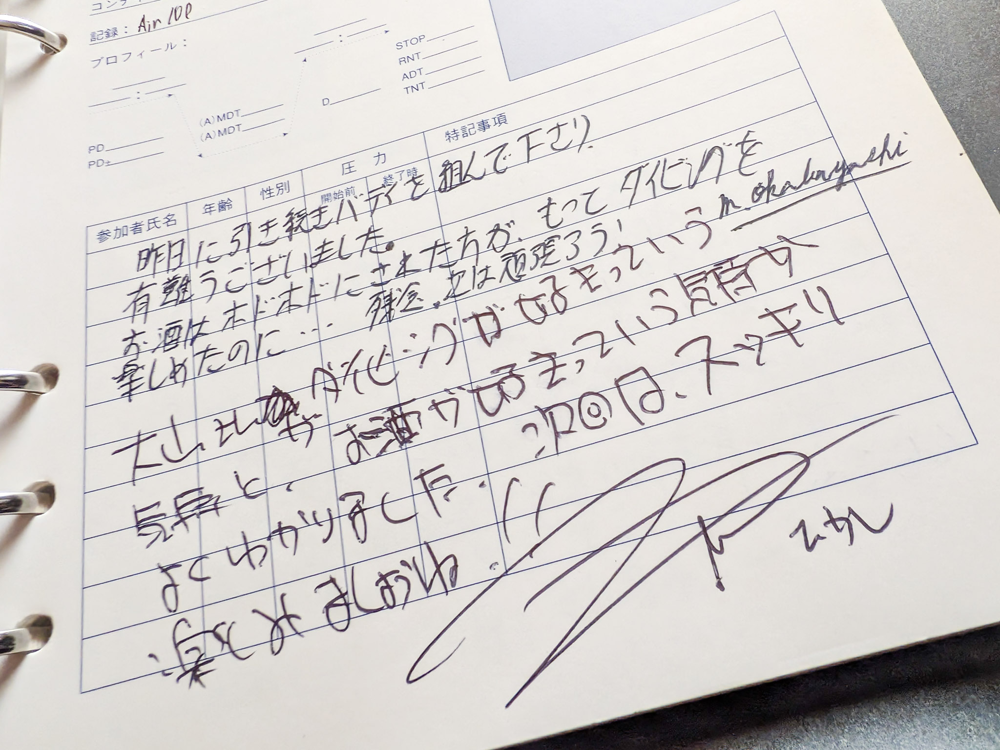

またこの手の話かと思った人は、速攻でタブを閉じるなりして回れ右してください。いつもの通りに全体を考えずに書いていきますが、たぶんウェットなテキストになるんだろうなって自分自身で予測できるので。はい、回れ右ですよ、回れ右。
ぼくが本当に潜れなくなって、今年の 9 月 10 日に潜ったのって、どれくらいの期間が実際に開いていたのか、思いつきなのですがなるべく正確な数字を知りたくなって調べてみました。
潜れなくなる前の最後のダイビングが S2Club 主催の 2004 年 09 月 19 日 (日) の和歌山県大島沖でのブルーウォーターダイビングだということはわかっています。ログブックも残っていますし。
なぜ師匠の店じゃなくて S2Club なのかというと、このとき、師匠は串本のダイビングサービスを閉業していて、業界から完全撤退していたからなのでした。ぼくはこの頃は一緒に潜りに行く友人もいませんでしたし、師匠が引退していたら行き場所が S2Club しかなかったのです。S2Club さん、そんな消極的な理由で選んですみませんでした。

ログブックを見ると、あんたがダイビングと海が好きなのはわかった、でも酒を飲みすぎやろ、って他のお客さんにやたらと突っ込まれている書き込みがありました。かなり醜態を晒していたようです。
おれ、酔っ払いながら何を喋ってたんだろう？気になる……まさか他のお客さんの目の前で泣いてたりせんよな？
このときはぼくがダイブマスターを受講していたことも、元々アシスタント・インストラクターだったことも伏せていたのです (このときにはもうアシスタント・インストラクター資格は失効していました)。引率のインストラクターにもばらさないでくれって頼んで。
もう自分がプロとして潜れるとは思ってなくて、ファンダイブならできるだろうか、と試していたってこともあったので。
結局このダイビングをもって、ぼくは 20 年以上ファンダイブすらできなくなってしまったのですけれど。
ファンダイブも無理でした……
そんないろいろがあって、ダイビングを再びできたのが (できたと言えるのかと言うと疑問ですが) 2025/09/10 串本備前ということになります。予想通り悲惨な 1 本でしたけど。
それで空いた期間がどれくらいなのか？を調べたら 20 年 11ヶ月 22 日もの歳月が過ぎていることがわかりました。日数にして 7662 日。なげーよ。長すぎるよ。
2025/09/10 串本備前がどう悲惨だったのかはリンク先を読んでください。
つづきはまた後ほど書きます。